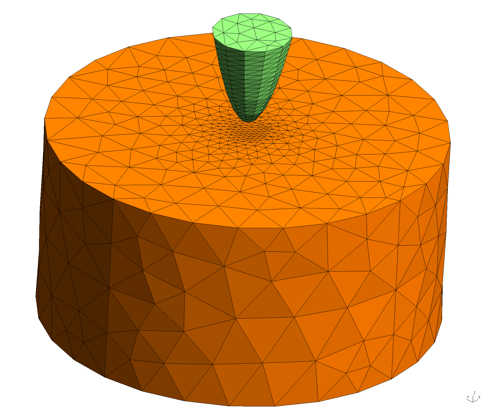
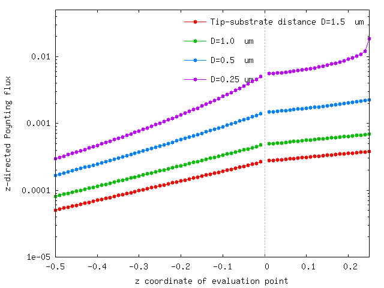

Spatial distribution of heat flux from a warm tip over a cold substrate
The files for this example may be found in the
share/scuff-em/examples/TipSubstrate subdirectory
of your scuff-em installation.
gmsh geometry files for paraboloidal tip and cylindrical substrate
The following script generates coarse and fine meshes of these objects; it uses this script.
#!/bin/bash
for SHAPE in Paraboloid Cylinder
do
for L in 1.0 0.5
do
gmsh -2 -clscale ${L} ${SHAPE}.geo -o ${SHAPE}.msh
RenameMesh ${SHAPE}.msh
done
done
gmsh geometry files

List of geometric transformations
List of evaluation points
Run scuff-neq
#!/bin/bash
ARGS=""
ARGS="${ARGS} --geometry ../TipSubstrate_Fine.scuffgeo"
ARGS="${ARGS} --TransFile ../TipSubstrate.trans"
ARGS="${ARGS} --Omega 0.7"
ARGS="${ARGS} --EPFile ../EPFile"
ARGS="${ARGS} --Power --ZForce"
scuff-neq ${ARGS}
Plot -directed Poynting flux from the tip through the vacuum and into the substrate:
gnuplot> plot 'TipSubstrate_Fine.SRFlux' u 5:9
